01
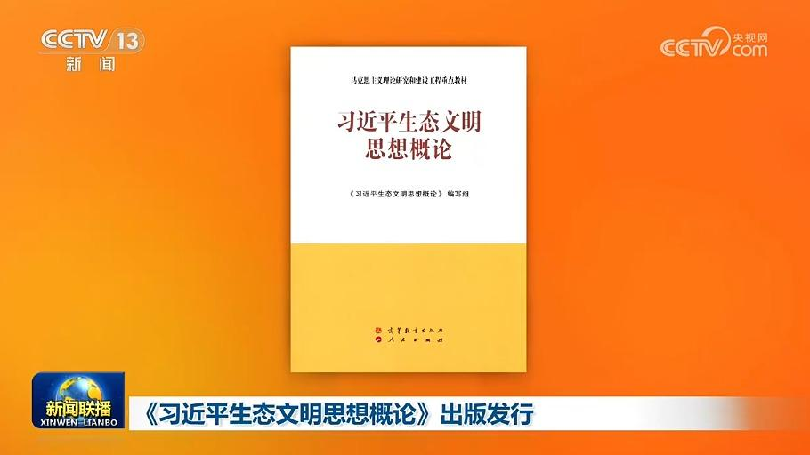
《习近平生态文明思想概论》出版发行
为深入推动习近平生态文明思想进教材进课堂进头脑，由中央宣传部、生态环境部组织编写的马克思主义理论研究和建设工程重点教材《习近平生态文明思想概论》（以下简称《概论》）一书，已由高等教育出版社、人民出版社出版。


为深入推动习近平生态文明思想进教材进课堂进头脑，由中央宣传部、生态环境部组织编写的马克思主义理论研究和建设工程重点教材《习近平生态文明思想概论》（以下简称《概论》）一书，已由高等教育出版社、人民出版社出版。
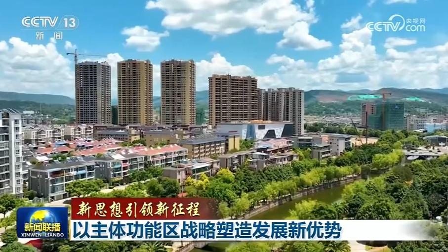
习近平总书记指出，我国960多万平方公里的国土，自然条件各不相同，定位错了，之后的一切都不可能正确。要加快完善基于主体功能区的政策和差异化绩效考核，推动各地区依据主体功能定位发展。“十五五”开局之年，我国主体功能区战略实施取得显著成效，全国上下协同发力，既推动经济发展，也共同端稳粮食饭碗、守好绿水青山，让每一寸国土都焕发独特的光彩。
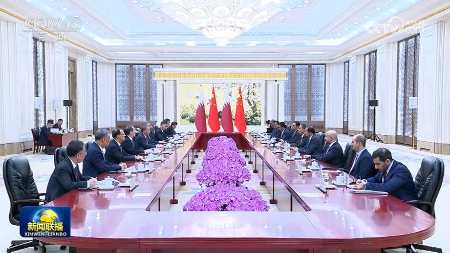
国务院总理李强7日下午在京会见卡塔尔首相兼外交大臣穆罕默德。李强表示，卡塔尔是中国在中东海湾地区的重要战略伙伴。在习近平主席和塔米姆埃米尔战略引领下，中卡关系保持稳健发展，政治互信不断巩固。中方愿同卡方一道，加强沟通协作，坚定相互支持，深化能源、投资、人工智能、人文等领域合作，更好造福两国人民。双方要加强多边协调配合，推动构建更加公正合理的全球治理体系。……
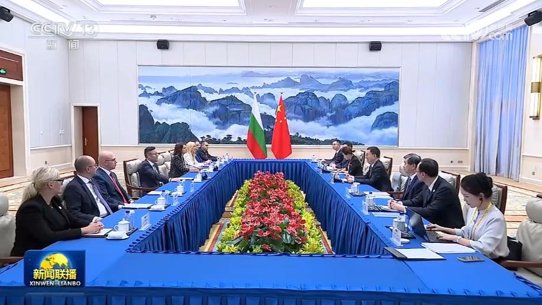
国家副主席韩正7日下午在福建厦门分别会见来华出席第二十六届中国国际投资贸易洽谈会的保加利亚副总理兼经济、投资和工业部长普列夫，柬埔寨副首相兼发展理事会第一副主席孙占托，塞尔维亚副总理兼经济部长梅萨罗维奇。
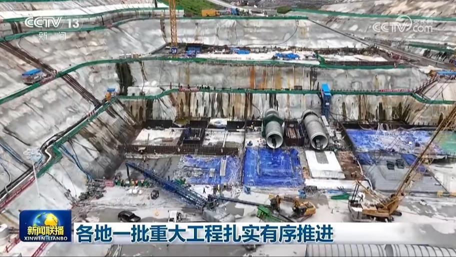
各地一批重大工程扎实有序推进，助力高质量发展。这两天，国家骨干水网工程——环北部湾广东水资源配置工程的取水口地心泵站进入主体结构施工阶段。环北部湾广东水资源配置工程全长490公里，从广东云浮市西江干流经地心泵站取水，输送至粤西地区，惠及沿线112个乡镇1800多万人口，计划2031年通水运行。在黑龙江牡丹江市，林海水库建设进入大坝封顶冲刺阶段。……
国务院新闻办公室今天（9月7日）上午举行新闻发布会，工业和信息化部、商务部、文化和旅游部与市场监管总局有关负责人表示，将多措并举推动历史经典产业高质量发展。
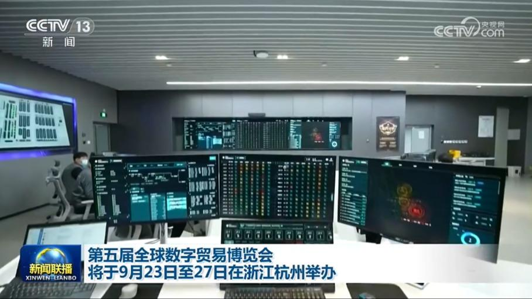
在国务院新闻办公室今天（9月7日）举行的新闻发布会上，商务部、浙江省等相关负责人介绍，第五届全球数字贸易博览会将于9月23日至27日在浙江杭州举办，围绕“在数贸会遇见AI未来”年度主题，设置八大展区，首设“词元”主题展区。届时，200多个顶尖大模型将集中亮相，全面呈现通用模型、行业应用、智能终端的全链条创新生态。同期举办世界人工智能开源大赛、具身智能应用挑战赛等赛事。
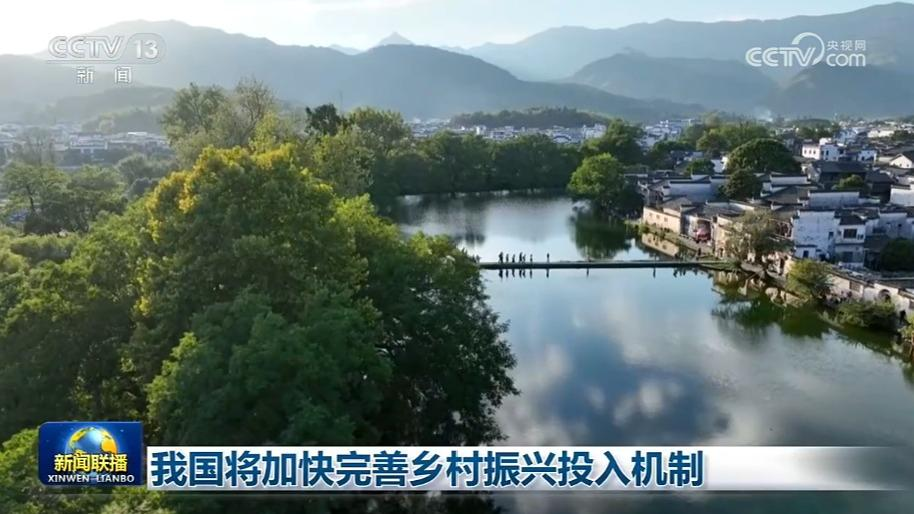
农业农村部等六部门近日联合印发《坚持农业农村优先发展 完善乡村振兴投入机制实施方案》（以下简称《方案》）。《方案》明确，坚持农业农村优先发展，健全财政优先保障、金融重点倾斜、社会积极参与的多元投入格局，确保乡村振兴投入力度不断增强，促进“三农”领域投入结构不断优化。
记者今天（9月7日）从广西壮族自治区人民政府新闻办公室举行的新闻发布会上获悉，平陆运河将于9月16日建成通航。全长134.2公里的平陆运河是新中国成立以来第一条国家层面统筹建设的通江达海运河工程，是国内通航等级最高的运河，可通航5000吨级船舶。通航后，我国西南地区货物经运河出海较经传统路径出海缩短内河航程560公里以上，每年可为社会节约运输费用超50亿元。
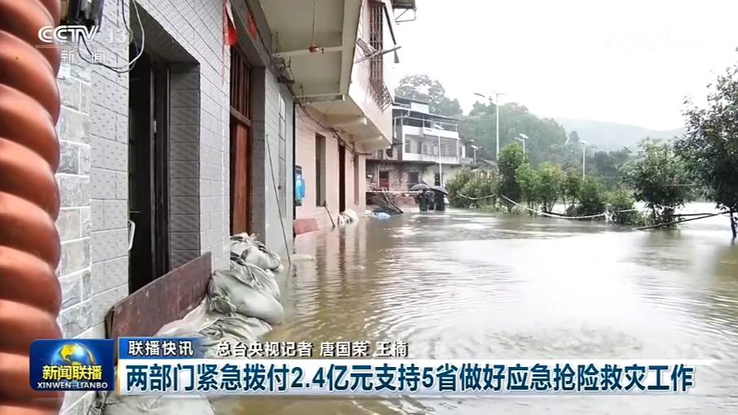
两部门紧急拨付2.4亿元支持5省做好应急抢险救灾工作
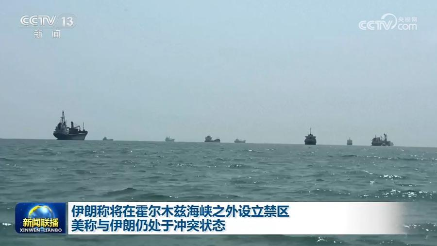
伊朗最高国家安全委员会秘书雷扎伊6日表示，伊朗将在霍尔木兹海峡之外设立一个禁区，范围将从美国海军“封锁线”延伸至波斯湾部分海域，任何进入这一范围的船只都将被伊方列入制裁名单。他还表示，伊朗将在未来几天公布这一新设立禁区的具体情况。
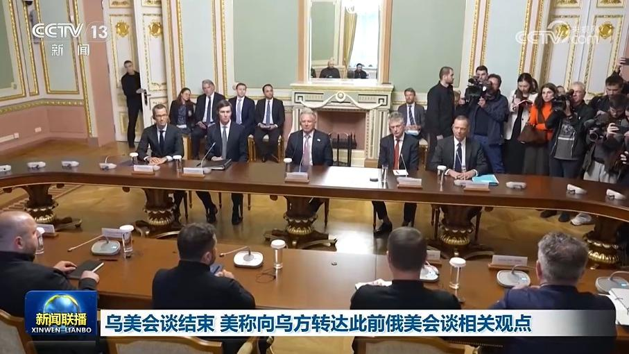
6日，乌克兰总统泽连斯基与到访的美国总统特使威特科夫等美方代表举行会谈。当天，乌、美方面还与英国、德国和法国代表进行了会谈。
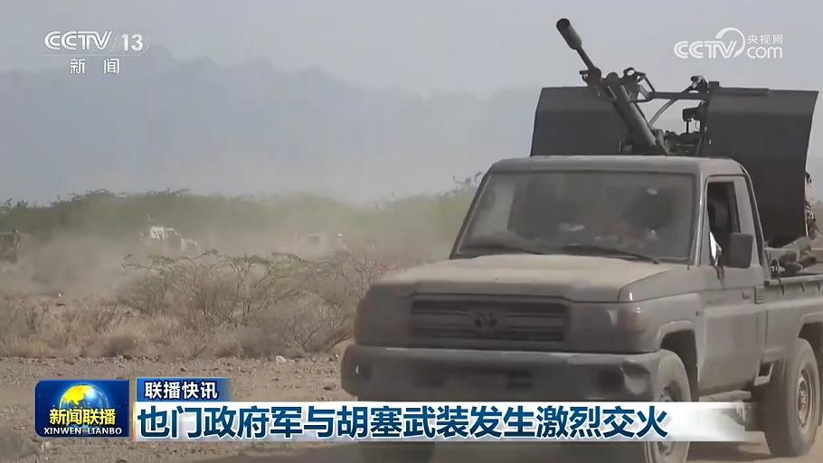
也门政府军与胡塞武装发生激烈交火
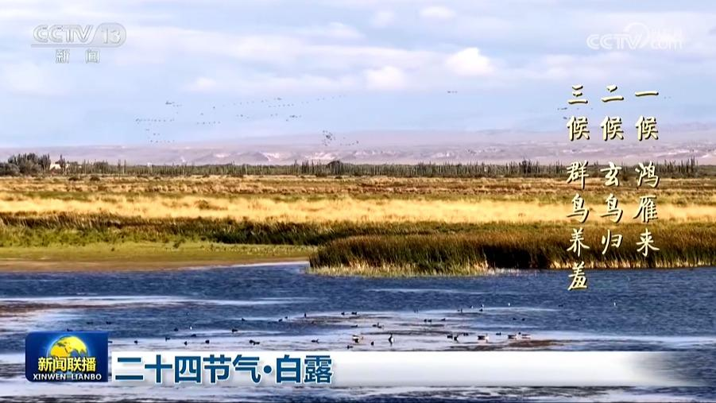
白露是秋季的第三个节气。天气渐渐转凉，寒生露凝。节目的最后，我们一起感受白露的自然和文化之美。